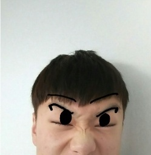
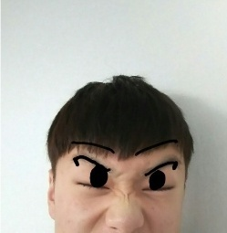

손황기는 손성준 + 황기의 합성어로 18살이라는 젊은 나이이지만 보통 노인들이 걸리는 질환인 "대상포진" 을 걸리는 그의 모습을 놀리고자 그의 성 "손" 에 노인의 이름같은 "황기" 를 붙여 만들어낸 합성어이다.
손황기에서 "황"을 따와 아무 단어 앞글자를 "황"으로 대체하면 된다.
ex) 리그오브레전드 -> 황기오브레전드, 어머니 -> 황머니, 하스스톤 -> 황스스톤, 예외) 황기데리, 마오카이 -> 황기카이
 
